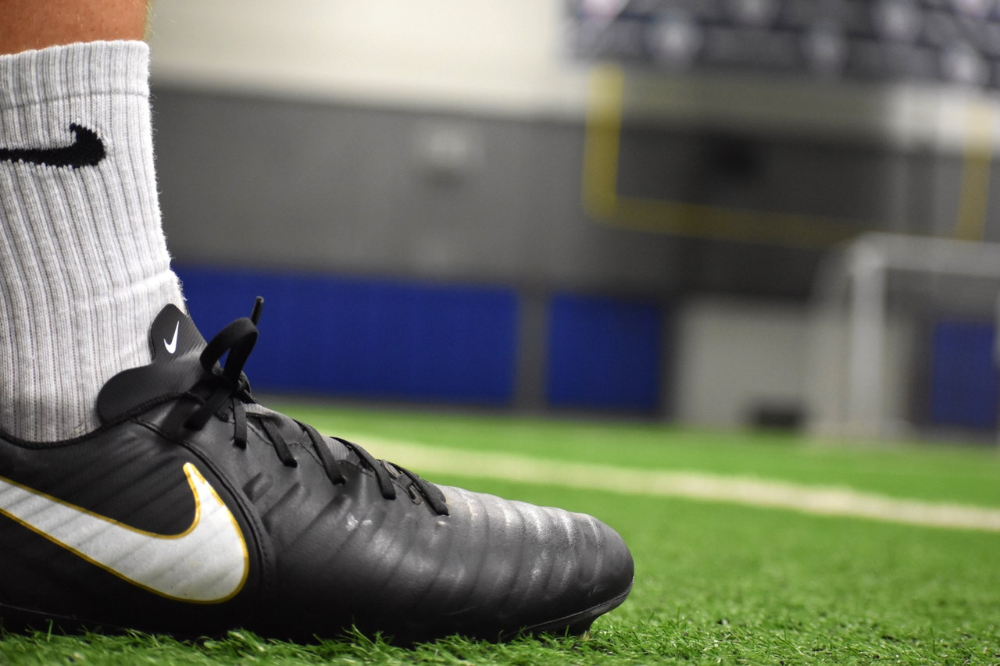

The World's 50 Best Restaurants is a list produced by the British magazine Restaurant, based on a poll of international
chefs, restaurateurs, gourmands and restaurant critics.

How Michelin-starred food has changed over the years
Tom Shingler pays a visit to Hambleton Hall – which has held a Michelin star since 1982 – to talk to head chef
Aaron Patterson about how the fine dining food scene has changed over the years.
A Postcard from My Kitchen Garden
In today's busy and crowded world no one has the time to devote into growing a proper garden. So here's why we came
with a brilliant alternative to keep you stocked with everything you need!
Bake Potatoes Like a Pro plus Ten Surprising Toppings
Step up your baked potato game with great technique and these interesting toppings!
Cooking with Natural Foods
Broadly speaking, there is a lot of room for improvement when it comes to the ingredients found in the average pantry - the
building blocks of your home cooking.
Best accessories for your kitchen
These knives are masterful, heirloom-quality pieces that have been crafted using the same techniques and
traditions since 1895.